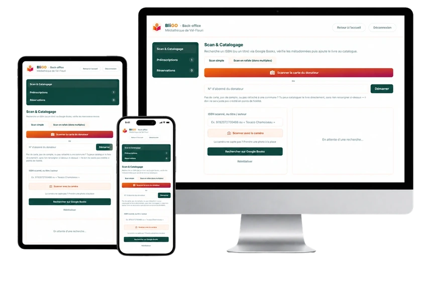

BliGO, c'est deux outils en un : un vrai logiciel de gestion pour vos agents (scan, exemplaires, transferts entre médiathèques) et une application gratuite pour vos habitants.
Grâce à la digitalisation, l'accès à la médiathèque est simplifié pour les habitants, le catalogue est accessible partout et les médiathèques retrouvent un trafic plus important.
Un agent à mi-temps suffit pour gérer réservations, remises en rayon et dons de livres. Même les plus petites communes peuvent faire vivre leur espace culturel.
Mise en ligne rapide du catalogue, avec une interface intuitive pour tous les agents, sans compétence technique requise.
Les dons participatifs des habitants agrandissent le catalogue, validés par un agent avant mise en ligne.

Vos agents scannent un code-barres à la douchette USB ou depuis un smartphone : emprunt, retour et rangement en rayon sont mis à jour instantanément, sur n'importe quel appareil.
Chaque exemplaire physique est suivi individuellement (disponible, emprunté, en rayon) avec sa cote de rangement. Plusieurs médiathèques d'une même communauté de communes peuvent partager une base commune.
Un livre peut circuler d'une bibliothèque à l'autre : statut « en transit » suivi automatiquement, agents notifiés à l'arrivée pour planifier le transport.
Deux niveaux d'accès : direction (accès complet) et agent (emprunt, retour, préinscriptions). Chacun ne voit que ce dont il a besoin au quotidien.
On discute de votre médiathèque, de sa taille et de ses besoins spécifiques, sans engagement.
Votre commune est configurée dans BliGO : catalogue initial, agents, et paramètres de réservation.
Une prise en main du back-office est assurée avec l'équipe de la médiathèque.
Les habitants de la commune peuvent créer leur compte et commencer à réserver des livres.
Chaque commune a ses besoins propres. On construit une offre adaptée à la taille de votre médiathèque et de votre équipe.
Demander une démo